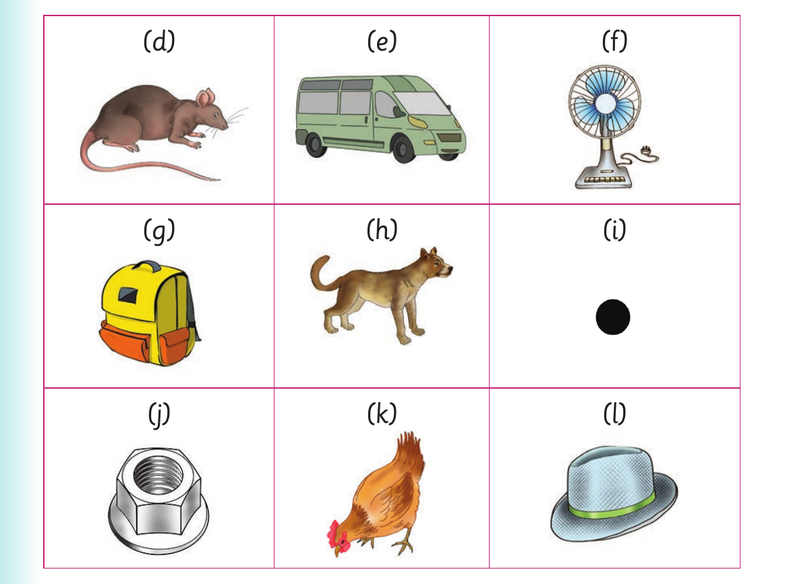

Replacing initial sounds - continued

(d), a picture of a rat. (e), a picture of a van. (f), a picture of a fan. (g), a picture of a bag. (h), a picture of a dog. (i), a picture of a dot. (j), a picture of a nut. (k), a picture of a hen. (l), a picture of a hat.
Activity 2
1. Pronounce or sign the words box , lip , bake , book , man and toy . 2. Pronounce the first sound of each word in (1). Or finger spell the first letter of each word in (1). 3. Replace the initial sound of each word in (1). Or replace the initial letter of each word in (1) and sign the words.
Example: box-fox
4. Pronounce or sign the new words you have formed in (3). 5. Read aloud or sign the following sentences: (a) A fox is sitting near the box.